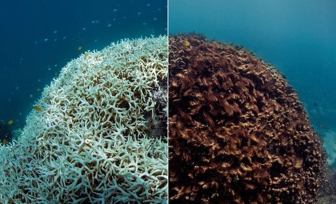
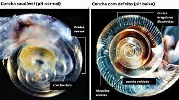
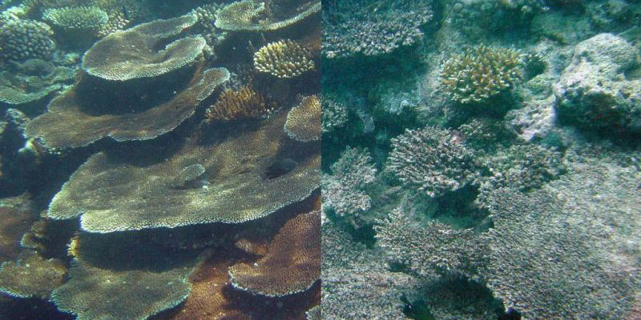

O Wave of Change é uma iniciativa da Iberostar que usa o turismo responsável para proteger os oceanos. As ações incluem: Fim dos plásticos descartáveis; Consumo sustentável de frutos-do-mar; Recuperação de ecossistemas costeiros, como recifes. O projeto busca restaurar a biodiversidade marinha e proteger as áreas onde seus hotéis estão localizados.
A acidificação oceânica é a diminuição do pH nos oceanos, causada principalmente pela dissolução do dióxido de carbono (CO₂) atmosférico. O oceano desempenha um papel importante no sistema climático, absorvendo CO₂ da atmosfera, que é utilizado por organismos como o fitoplâncton para fotossíntese. Quando essas algas morrem, o CO₂ é levado para o fundo do oceano. Desde a Revolução Industrial, a queima de combustíveis fósseis aumentou em 40% os níveis de CO₂ na atmosfera, e parte desse gás é absorvido pelos oceanos. O excesso de CO₂ altera a química da água, formando ácido carbônico e diminuindo o pH, o que afeta organismos calcários, como os corais, dificultando sua reprodução e sobrevivência. Isso prejudica os ecossistemas recifais e afeta a biodiversidade, a pesca e o turismo. Embora a acidificação não seja causada diretamente pelas mudanças climáticas, ela é um problema adicional relacionado ao aumento de CO₂. Por sua vez, a água mais ácida diminui a capacidade do oceano de absorver CO₂, agravando ainda mais as mudanças climáticas. Além disso, compromete a cadeia alimentar marinha, afetando espécies maiores e a segurança alimentar de milhões de pessoas em regiões costeiras dependentes desses recursos naturais.



Vinicius dos Santos
Maria Julia
Vinicius Romeo
Isadora Caldeira
Yara Rodrigues